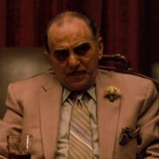
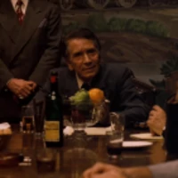
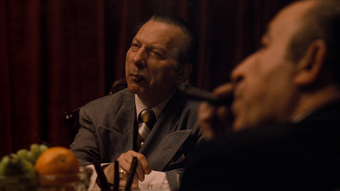
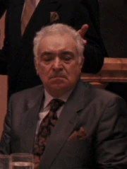

La familia Tattaglia es una mafia ficticia que sale en el libro El padrino escrito por Mario Puzo y llevado al cine en la película El Padrino dirigida por Francis Ford Coppola basada en la historia del libro. Esta familia mafiosa está ubicada en Nueva York y compite por el poder de esta ciudad contra otras cuatro familias: la familia Barzini, la familia Cuneo, la familia Stracci y la familia Corleone. Los Tattaglia controlaban Brooklyn.
La familia Barzini es una familia mafiosa ficticia que aparece en la novela de Mario Puzo «El Padrino», en la película «El Padrino», basada en la novela y dirigida por Francis Ford Coppola. Representa la segunda familia más poderosa en la ciudad , después de los Corleone. en el videojuego se destaca por matar a Johnny Trapanni en el principio del videojuego, padre de Aldo Trapanni. En la película aparece en escenas: en la boda de Connie
La familia Stracci es una familia mafiosa que aparece en el libro de Mario Puzo El Padrino y en la película dirigida por Francis Ford Coppola El Padrino basada en el libro de Puzo. Esta familia habita en Nueva York (precisamente Staten Island) y compite por el poder de esta ciudad contra otras cuatro familias: la familia Barzini, la familia Cuneo, la familia Tattaglia y la familia Corleone. La familia Stracci está gobernada por Anthony Stracci (en la película es conocido como Víctor Stracci). Los Stracci también controlaban Nueva Jersey
La familia Cuneo es una mafia ficticia creada por Mario Puzo en su libro El Padrino y llevada al cine por Francis Ford Coppola en la película El Padrino. La familia está ubicada en el Bronx, Nueva York, junto con otras cuatro familias: la familia Barzini (en Manhattan), la familia Stracci (en Staten Island), la familia Tattaglia (en Brooklyn) y la familia Corleone (en Queens). La familia Cuneo está gobernada por Ottilio Cuneo (en la película se llama Carmine Cuneo). Este es asesinado por la familia Corleone mientras sale por la puerta giratoria de un hotel.
